1 Getting Started
1.1 Here is a Shiny app
And not just any app, an app that you will be able to build by the end of this tutorial!
https://minecr.shinyapps.io/movies/?showcase=0
1200px
https://minecr.shinyapps.io/movies/
We’ll go through the technical details of each component of such an app throughout the tutorial, but for now let’s take a high level view.
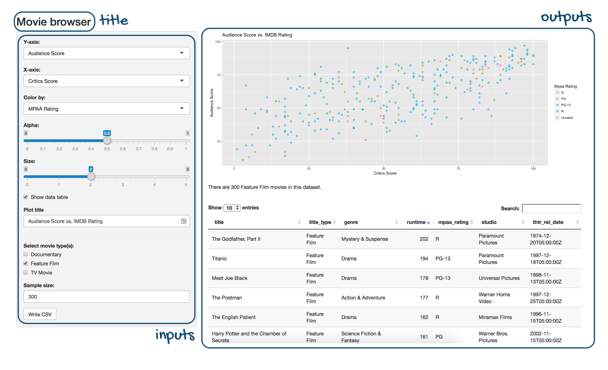
We have:
- a title for the app,
- a series of inputs:
- some of these inputs use drop down menus for selection,
- some are sliders,
- some allow for text input, and
- some are action buttons
- and a few outputs:
- a plot output that the user can interactively update,
- a text output that updates alongside it, and
- a data table output that also updates alongside these.
As much as it looks like there is a lot going on in this sample app, the app doesn’t even scratch the surface of what you can build with Shiny.
I hope you’re excited to take it all in!
1.2 Background
Before we get started with Shiny, let’s talk background…
This tutorial assumes that you are familiar with R as a programming language.
Additionally, this tutorial uses packages from the tidyverse (e.g. dplyr for data wrangling and ggplot2 for data visualisation). Your Shiny apps can use any package, but if you’d like to learn more about doing data science with the tidyverse, see here.
1.3 Help
The tutorial is designed for beginners and many of the exercises have plenty of scaffolding to help you along the way.
That being said, there are a few other resources that might help your learning.

The first is the Shiny cheatsheet. This is a handy-dandy cheatsheet that I recommend you keep close by when building Shiny apps.
The second is the Shiny homepage. It is the place to learn about all things Shiny and to keep up to date with it as it evolves.
1.4 Tips
Also, let’s go over three very important tips for learning to develop Shiny apps:
Always run the entire script containing the R code, not just up to the point where you’re developing code. For most exercises in this tutorial you will be asked to modify or update existing Shiny code, and even though you might be altering a small portion of the code, you still need to run the entire app code to create the app.
Sometimes the best way to troubleshoot is to run the app and review the error. Not only can the error message be informative, but googling the error message might quickly land you on a solution.
Watch out for commas! This will mean more as you start to learn Shiny, but just keep in mind, a Shiny error can often be caused by a missing comma. Thankfully, the RStudio IDE will alert you to most of these missing comma or similar syntax errors, like the one shown below.
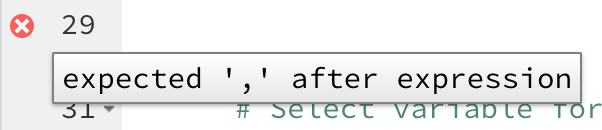
1.5 Anatomy of a Shiny app
Alrighty, let’s take a look at the anatomy of a Shiny app:
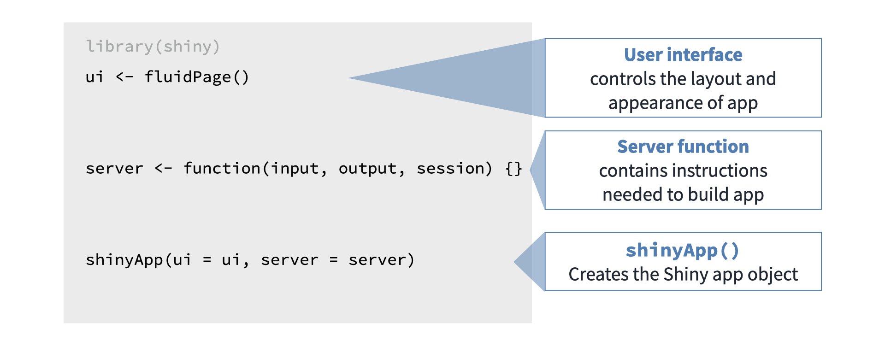
We start by loading any necessary packages, one of which is necessarily shiny.
Then we lay out the user interface with a ui object that controls the appearance of our app.
And we define the server function that contains instructions needed to build the app.
We end each Shiny app script with a call to the shinyApp() function that puts these two components together to create the Shiny app object.
1.6 Data
In this tutorial we will build a simple movie browser app.
We will use data from the movies dataset, which combines data from two websites: the Internet Movie Database, commonly known as IMDB, and Rotten Tomatoes. The observations are a random sample of 651 movies released in the US between 1970 and 2014.
So where does the loading of the data happen in an app?
1.7 Revisit
Let’s revisit the app layout from a couple sections back.
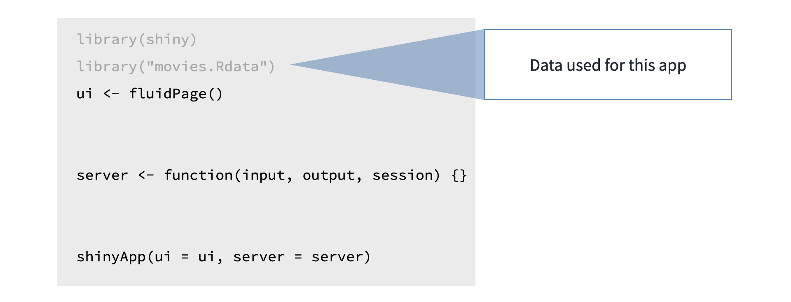
We load the data before ui and server definitions so that it can be used in both.
Alright, time for some practice!
1.8 Practice: What’s in an app?
Which of these is not generally a part of the Shiny app architecture?” - A function that installs an R package - User interface - Server function - A function that creates Shiny app objects
Answer: A function that installs an R package. You don’t want to reinstall the package every time you run your app, so you should do this once in your console instead of within your Shiny app
1.9 Practice: First peek under the hood
Below you can see the complete code to reproduce the app we introduced in the previous section. Now you get to interact with the app yourself, and make small adjustments to it.
I’ve created an RStudio Cloud Project for you to test drive this code. Click the button below to be taken to your RStudio Workspace, select 1.1 First peek under the hood from the Project list, and follow the exercise instructions below to get started!
Navigate to the project called 1-1 First peek under the hood after clicking the button below
1.10 Your turn
- Once your RStudio Cloud Project is open to the script
app.R, click 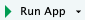 to run the code and generate the app. - Play with the input selectors for the Y-axis and the X-axis and observe how the output changes.
- Close the app by closing the pop-up window or clicking on the red Stop button in the viewer.
- Locate the relevant lines of code in
app.Rthat build the selector widget for the Y-axis. This is in aselectInput()function starting on Line 20, underneath the comment# Select variable for y-axis. Note that this function takes four arguments:inputId,label,choices, andselected. We’ll discuss what each of these mean in detail shortly. For now, change theselectedargument toimdb_rating, save your changes, and run the app again by clicking on . What changed?- If you get an error when you try to rerun the app, you can either try to debug the issue by tracing back your steps or delete everything in
app.Rand copy and paste the code below intoapp.R. This will get you back to your starting point. You can use this “start over” approach for any of the exercises in this tutorial.
- If you get an error when you try to rerun the app, you can either try to debug the issue by tracing back your steps or delete everything in
- Now locate the relevant lines of code in
app.Rthat build the selector widget for the X-axis. This is also in aselectInput()function, starting on Line 27, underneath the comment# Select variable for x-axis. Change theselectedargument toimdb_ratingas well, save your changes, and run the app again. What changed?
# Load packages ----------------------------------------------------------------
library(shiny)
library(ggplot2)
# Load data --------------------------------------------------------------------
load("movies.RData")
# Define UI --------------------------------------------------------------------
ui <- fluidPage(
sidebarLayout(
# Inputs: Select variables to plot
sidebarPanel(
# Select variable for y-axis
selectInput(
inputId = "y",
label = "Y-axis:",
choices = c("imdb_rating", "imdb_num_votes", "critics_score", "audience_score", "runtime"),
selected = "audience_score"
),
# Select variable for x-axis
selectInput(
inputId = "x",
label = "X-axis:",
choices = c("imdb_rating", "imdb_num_votes", "critics_score", "audience_score", "runtime"),
selected = "critics_score"
)
),
# Output: Show scatterplot
mainPanel(
plotOutput(outputId = "scatterplot")
)
)
)
# Define server ----------------------------------------------------------------
server <- function(input, output, session) {
output$scatterplot <- renderPlot({
ggplot(data = movies, aes_string(x = input$x, y = input$y)) +
geom_point()
})
}
# Create a Shiny app object ----------------------------------------------------
shinyApp(ui = ui, server = server)1.11 User interface (UI)
1.11.1
In this section we’ll build the user interface of a simple app.
However, before we get into the weeds of building a user interface, let’s revisit the anatomy of a Shiny app.

The user interface, that we’ll refer to as the “UI” going forward, defines and lays out the inputs of your app where users can make their selections. It also lays out the outputs.
The server function, on the other hand, calculates outputs and performs any other calculations needed for the outputs.
1.11.2 Example
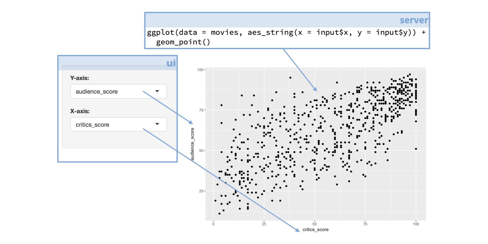
For example, if your app features a plot the code for building that plot lives in the server function. But the setup for the user defined inputs for the plot, as well as information on where physically on the app the plot should appear, are defined in the UI.
1.11.3
Here is the app we’ll work with in this section and the code that builds the UI of that app.
Since this is too much code to parse, we’ll explore individual components of the UI one by one.
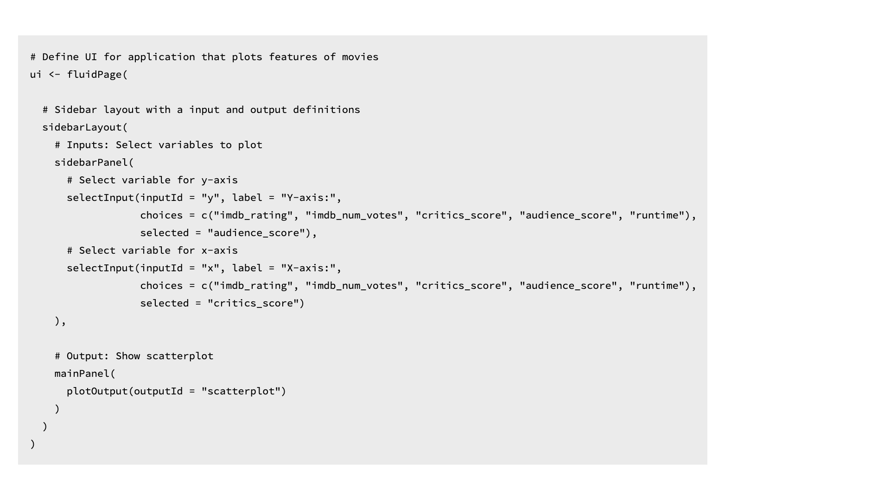
1.11.4 fluidPage()
At the outermost layer of our UI definition we begin with the fluidPage() function.
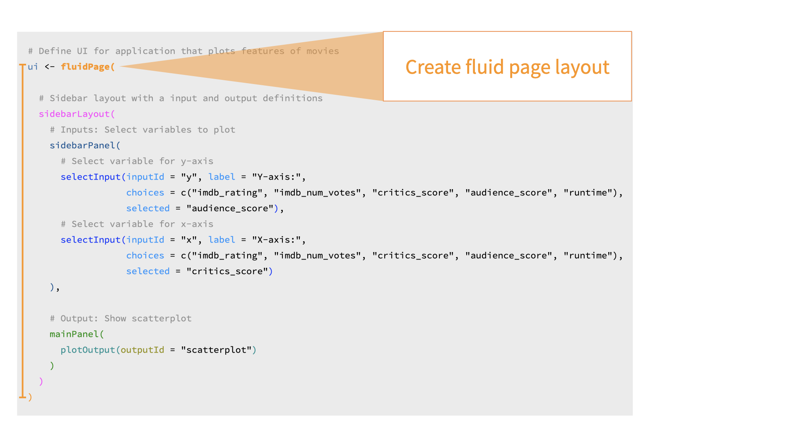
The fluidPage() function creates a fluid page layout consisting of rows and columns. Rows make sure that elements in them appear on the same line. Columns within these rows define how much horizontal space each element should occupy.
Fluid pages scale their components in realtime to fill all available browser width, which means you, the app developer, don’t need to worry about defining relative widths for individual app components.
As always, for more information on arguments to this function, you can view the R function help by typing ?fluidPage in your R console or visiting the function reference page on the package website here.
1.11.5 Layout
Next, we define the layout of our app with sidebarLayout().
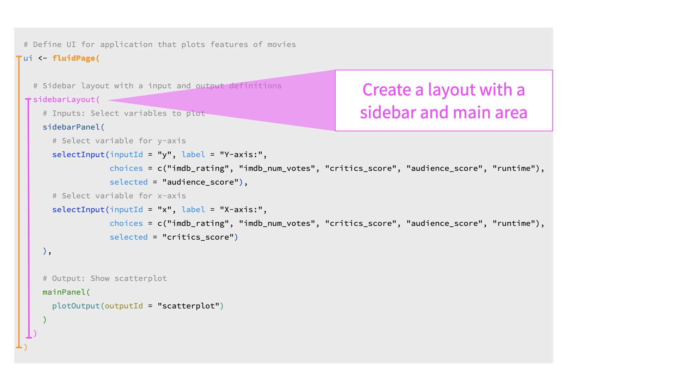
Shiny includes a number of options for laying out the components of an application. The default layout, the one we’re using in our example app, is a layout with a sidebar, that you can define with the sidebarLayout() function.
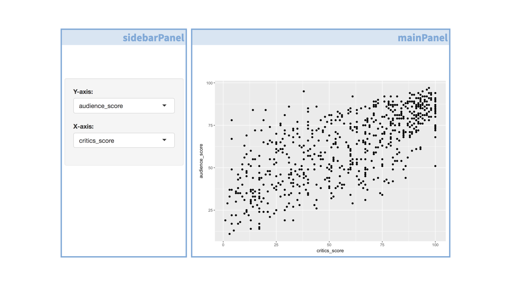
This is a simple layout with a narrow sidebar for inputs and a wider main area for output.
Under the hood, Shiny implements layout features available in Bootstrap 2, which is a popular HTML/CSS framework. However the nice thing about working in Shiny is that no prior experience with Bootstrap is necessary.
To learn more about various layouts, I recommend reviewing the Application Layout Guide article at shiny.rstudio.com.
1.11.6 Input controls
Next we define our sidebar panel containing input controls.
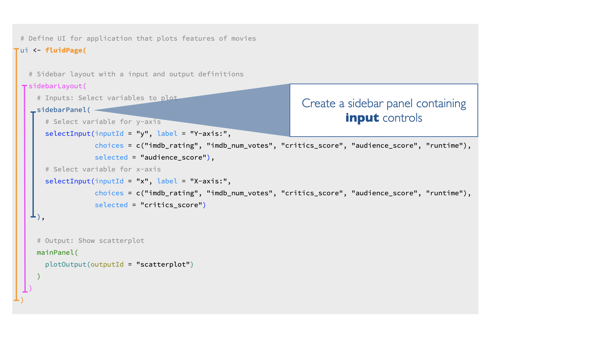
1.11.7
This panel contains two dropdown menus created with the selectInput() function.
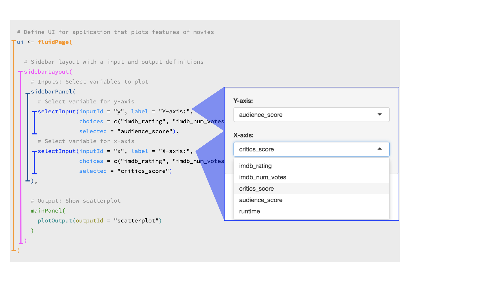
1.11.8
Let’s take a look at one of the selectInput widgets a little more closely.
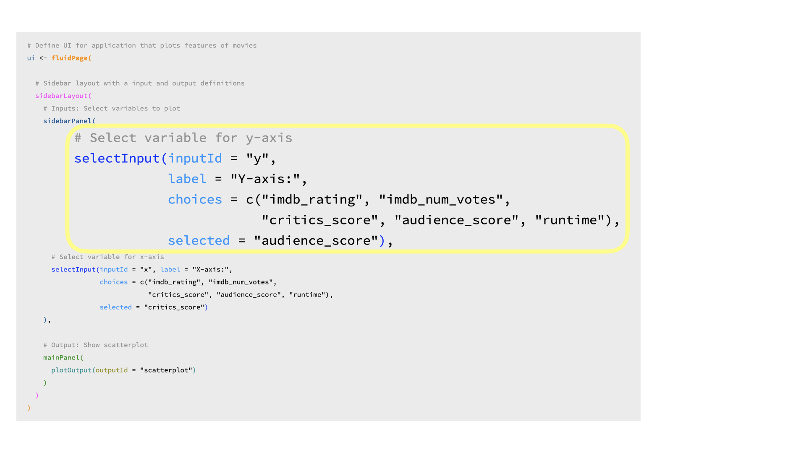
The first argument is the
inputId, which is the input value that the app will internally use to access the value selected by the user.The second argument is the
label, which is the display label that the user sees.The third argument is the list of
choicesthe user will choose from. In this app, these are variable names from the movies dataset.And lastly we specify a default selection from that list with
selected.
1.11.9 Main Panel
The final component of our UI is mainPanel().
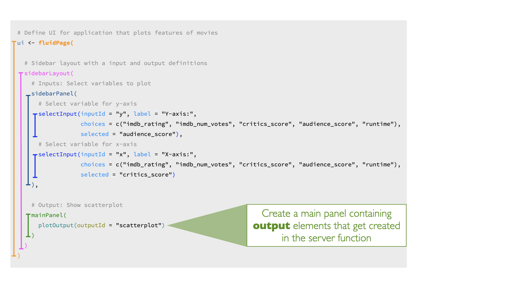
Currently the main panel contains only one component, a plot output. We’ll talk about how this plot is built later in the tutorial.
Next, let’s practice building an app UI!
1.11.10 Practice: Extend the UI
We’ll start with a simplified version of the app you saw in the previous exercise. In this app a selectInput() widget is used to allow the user to select which variables should be plotted on the x and y axes of the scatterplot.
The selectInput() function has the following arguments:
- an
inputIdthat is used to refer to the input parameter when building the scatterplot, - a list of
choicesto pick from (which must match variable names in the data frame), - and a
selectedchoice for when the app first launches.
1.11.10.1 Your turn
Modify the Shiny app code in app.R / shown below:
- In the
ui:- Add a new
selectInputwidget to color the points by a choice of the following variables:"title_type","genre","mpaa_rating","critics_rating","audience_rating". - Make the default selection
"mpaa_rating". - Use
"z"as theinputId. labelcan be whatever you like.
- Add a new
- In the
server:- Set the color argument in
ggplot()aesthetic mappings toinput$z.
- Set the color argument in
Complete this exercise by opening up the RStudio Project titled 1-2a Extend the UI within your RStudio Cloud Workspace
# Load packages ----------------------------------------------------------------
library(shiny)
library(ggplot2)
# Load data --------------------------------------------------------------------
load("movies.RData")
# Define UI --------------------------------------------------------------------
ui <- fluidPage(
sidebarLayout(
# Inputs: Select variables to plot
sidebarPanel(
# Select variable for y-axis
selectInput(inputId = "y",
label = "Y-axis:",
choices = c("imdb_rating", "imdb_num_votes", "critics_score", "audience_score", "runtime"),
selected = "audience_score"),
# Select variable for x-axis
selectInput(inputId = "x",
label = "X-axis:",
choices = c("imdb_rating", "imdb_num_votes", "critics_score", "audience_score", "runtime"),
selected = "critics_score"),
# Select variable for color
selectInput(inputId = "___",
label = "____",
choices = c(___),
selected = "___")
),
# Output: Show scatterplot
mainPanel(
plotOutput(outputId = "scatterplot")
)
)
)
# Define server ----------------------------------------------------------------
server <- function(input, output, session) {
output$scatterplot <- renderPlot({
ggplot(data = movies, aes_string(x = input$x, y = input$y,
color = ___)) +
geom_point()
})
}
# Create a Shiny app object ----------------------------------------------------
shinyApp(ui = ui, server = server)
Show solution
See the following code chunk for the solution to the exercise above.
# Load packages ----------------------------------------------------------------
library(shiny)
library(ggplot2)
# Load data --------------------------------------------------------------------
load("movies.RData")
# Define UI --------------------------------------------------------------------
ui <- fluidPage(
sidebarLayout(
# Inputs: Select variables to plot
sidebarPanel(
# Select variable for y-axis
selectInput(inputId = "y",
label = "Y-axis:",
choices = c("imdb_rating", "imdb_num_votes", "critics_score", "audience_score", "runtime"),
selected = "audience_score"),
# Select variable for x-axis
selectInput(inputId = "x",
label = "X-axis:",
choices = c("imdb_rating", "imdb_num_votes", "critics_score", "audience_score", "runtime"),
selected = "critics_score"),
# Select variable for color
selectInput(inputId = "z",
label = "Color by:",
choices = c("title_type", "genre", "mpaa_rating", "critics_rating", "audience_rating"),
selected = "mpaa_rating")
),
# Output: Show scatterplot
mainPanel(
plotOutput(outputId = "scatterplot")
)
)
)
# Define server ----------------------------------------------------------------
server <- function(input, output, session) {
output$scatterplot <- renderPlot({
ggplot(data = movies, aes_string(x = input$x, y = input$y,
color = input$z)) +
geom_point()
})
}
# Create a Shiny app object ----------------------------------------------------
shinyApp(ui = ui, server = server)1.11.11 Practice: Extend the UI further
The potential variables the user can select for the x and y axes and color currently appear in the UI of the app the same way that they are spelled in the data frame header. However we might want to label them in a way that is more human readable. We can achieve this using named vectors for the choices argument, in the format of "Human readable label" = "variable_name".
1.11.11.1 Your turn
- Fill in the blanks in the code below with human readable labels for
xandyinputs. - Re-create the
selectInputwidget for color,z, with options"title_type","genre","mpaa_rating","critics_rating", and"audience_rating", default selection"mpaa_rating"just like in the previous exercise, but this time use human readable labels as well.
Complete this exercise by opening up the RStudio Project titled 1-2b Extend the UI further within your RStudio Cloud Workspace
# Load packages ----------------------------------------------------------------
library(shiny)
library(ggplot2)
# Load data --------------------------------------------------------------------
load("movies.RData")
# Define UI --------------------------------------------------------------------
ui <- fluidPage(
sidebarLayout(
# Inputs: Select variables to plot
sidebarPanel(
# Select variable for y-axis
selectInput(inputId = "y",
label = "Y-axis:",
choices = c(___ = "imdb_rating",
___ = "imdb_num_votes",
___ = "critics_score",
___ = "audience_score",
___ = "runtime"),
selected = "audience_score"),
# Select variable for x-axis
selectInput(inputId = "x",
label = "X-axis:",
choices = c(___ = "imdb_rating",
___ = "imdb_num_votes",
___ = "critics_score",
___ = "audience_score",
___ = "runtime"),
selected = "critics_score"),
# Select variable for color
selectInput(inputId = "z",
label = "Color:",
choices = ___,
selected = ___)
),
# Output: Show scatterplot
mainPanel(
plotOutput(outputId = "scatterplot")
)
)
)
# Define server ----------------------------------------------------------------
server <- function(input, output, session) {
output$scatterplot <- renderPlot({
ggplot(data = movies, aes_string(x = input$x, y = input$y,
color = input$z)) +
geom_point()
})
}
# Create a Shiny app object ----------------------------------------------------
shinyApp(ui = ui, server = server)
Show solution
See the following code chunk for the solution to the exercise above.
# Load packages ----------------------------------------------------------------
library(shiny)
library(ggplot2)
# Load data --------------------------------------------------------------------
load("movies.RData")
# Define UI --------------------------------------------------------------------
ui <- fluidPage(
sidebarLayout(
# Inputs: Select variables to plot
sidebarPanel(
# Select variable for y-axis
selectInput(inputId = "y",
label = "Y-axis:",
choices = c("IMDB rating" = "imdb_rating",
"IMDB number of votes" = "imdb_num_votes",
"Critics score" = "critics_score",
"Audience score" = "audience_score",
"Runtime" = "runtime"),
selected = "audience_score"),
# Select variable for x-axis
selectInput(inputId = "x",
label = "X-axis:",
choices = c(
"IMDB rating" = "imdb_rating",
"IMDB number of votes" = "imdb_num_votes",
"Critics score" = "critics_score",
"Audience score" = "audience_score",
"Runtime" = "runtime"),
selected = "critics_score"),
# Select variable for color
# Select variable for color
selectInput(inputId = "z",
label = "Color by:",
choices = c(
"Title type" = "title_type",
"Genre" = "genre",
"MPAA rating" = "mpaa_rating",
"Critics rating" = "critics_rating",
"Audience rating" = "audience_rating"),
selected = "mpaa_rating")
),
# Output: Show scatterplot
mainPanel(
plotOutput(outputId = "scatterplot")
)
)
)
# Define server ----------------------------------------------------------------
server <- function(input, output, session) {
output$scatterplot <- renderPlot({
ggplot(data = movies, aes_string(x = input$x, y = input$y,
color = input$z)) +
geom_point()
})
}
# Create a Shiny app object ----------------------------------------------------
shinyApp(ui = ui, server = server)1.12 Server function
Now that you’ve had some practice with the UI, it’s time to move on to the server function.
Again, before we get into the details, let’s remind ourselves of the anatomy of a Shiny app. The basic task of the server function is to define the relationship between inputs and outputs.
1.12.1 Here again is the app that we are working with in this module
Earlier we saw how to build the UI of this app, and we also noted that each input was tagged with an inputId that can be used to refer to them in the server.
1.12.2 This is the server function code for this app
Once again there is a lot going on here to parse at once, so in the following sections we take a closer look at the function.

1.12.3 At the outermost layer

We define our server function which takes two arguments: an input and an output. Both of these are named lists.
The server function accesses inputs selected by the user to perform computations and specifies how outputs laid out in the UI should be updated.
The server function can take on one more argument, session, which is an environment that can be used to access information and functionality relating to the session. However this concept is beyond the scope of this tutorial, so for now we’ll stick to server functions that only have input and output arguments.
1.12.4 output
Our simple app had only one output – a plot. So our server function contains the logic necessary to build this plot.
The renderPlot() function specifies how the plot output should be updated. Let’s take a look at what is happening in the renderPlot() function first.
1.12.5 renderPlot()

This is good ol’ ggplot2 code! So even if you’re new to shiny, if you’ve previously used ggplot2 for plotting in R, this syntax should look familiar to you.
One aspect of the syntax that might be new, however, is how the x and y variables are defined. They come from the input list that is built in the UI.
1.12.6 Inputs
Here is the relevant UI and server code.
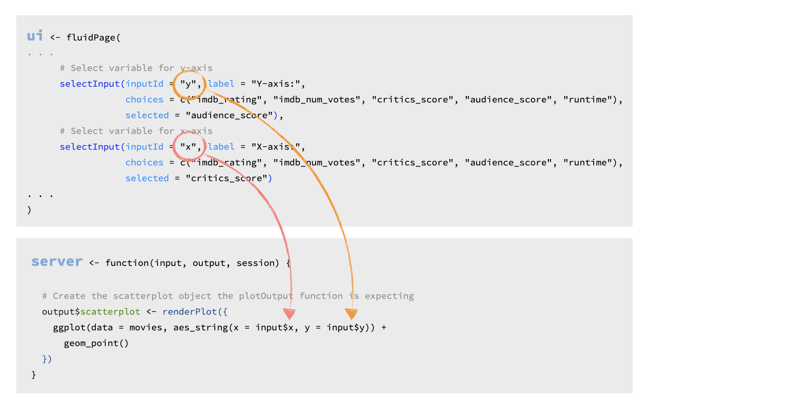
Input x and y come from the selectInput() widgets, and map to the x and y arguments of the plot aesthetics.
1.12.7 Rules of server functions
There are three rules of building server functions:
Always save objects to display to the named output list, i.e. something of the form
output$xx, wherexxis the plot you want to display.Always build objects to display with one of the
render*()functions, like we built our plot withrenderPlot().Use input values from the named input list, with
input$xx.
1.12.8 Output types
Just like various inputs, Shiny also provides a wide selection of output types each of which works with a render function.
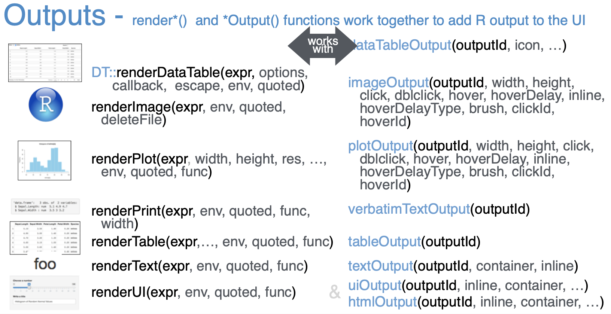
For example, in our app we used the renderPlot() function to build our reactive plot (we’ll get to what I mean by reactive in a second) and laid out the plot with the plotOutput() function.
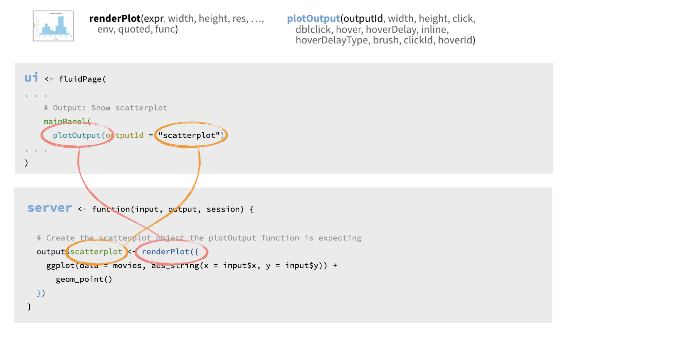
Shiny knows to match these two together as they use the same outputID, scatterplot.
In the following exercises you’ll get a chance to work with other render/output function pairs to add more elements to your app.
1.12.9 Practice: Matching inputs and outputs
Here is a simple Shiny app. Try entering some text and observe how the text is displayed back to you after a short pause.
#{r, context = "server", eval = TRUE} # output$user_text <- renderText({ input$custom_text }) #
The code for this app is given below, with a few pieces missing (indicated with ___). Each of the blanks are numbered, e.g. ([1], [2], etc.)
library(shiny)
ui <- fluidPage(
textInput(
inputId = "custom_text",
label = "_[1]_"
),
strong("Text is shown below:"),
_[2]_(outputId = "_[3]_")
)
server <- function(input, output, session){
output$user_text <- renderText({ input$_[4]_ })
}
shinyApp(ui = ui, server = server)#{r mc-2} #question("Which of the following is false?", # answer('`[1]` should be `"Input some text here:"`', # message = "Take a look at the app, what text is #shown to the user above the text input area?"), # answer('`[2]` should be `textOutput`', # message = "Check out the Shiny cheatsheet for pairs #of input and output functions"), # answer('`[3]` should be `"custom_text"`', correct = TRUE), # answer('`[4]` should be `"custom_text"`', # message = "What is the ID of the input that should #be rendered?"), # allow_retry = TRUE #) #
1.12.10 Reactivity
Let’s also briefly discuss reactivity.
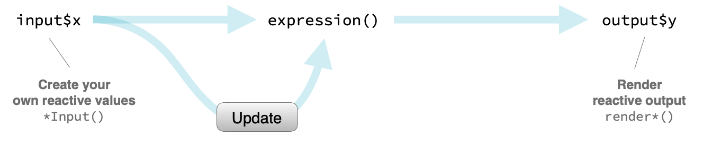
It’s easy to build interactive applications with Shiny, but to get the most out of it, you’ll need to understand the reactive programming scheme used by Shiny.
In a nutshell Shiny automatically updates outputs, such as plots, when inputs that go into them change.
1.12.11 Putting all the pieces together
Before we wrap up this section, I should also mention the last component of each Shiny app, which is a call to the aptly named shinyApp() function, which puts the UI and the server pieces together to create a Shiny app object.

Time to put this all into practice!
1.12.12 Practice: Rules of server functions
Which of the following is not true about server functions?
#{r mc-3} #question("Which of the following is not true about server functions?", # answer("Server functions should include a call to #`runApp()`", # correct = TRUE, # message = "The `runApp()` function can be used in the Console to run a Shiny application, as an alternative to the Run App button in the RStudio IDE." # ), # answer("Objects to be displayed should be saved to #`output$`"), # answer("Reactive objects should be built with `render*()` functions"), # answer("Input values should be referred to with `input$`"), # allow_retry = TRUE, # random_answer_order = TRUE #) #
1.12.13 Practice: Fix it up
Below is the code for the Shiny app we built earlier, however currently the code is broken. Specifically there are errors in the definition of the server function as well as in the mainPanel of the UI.
1.12.13.1 Your turn
- Review the app and identify errors in the code.
- Hint: Refer back to the rules of server functions.
- Do the render functions match the output functions? If not, make the appropriate change and try running the app. Are there any remaining errors?
- Are the inputs referred to using the correct syntax? If not, make the appropriate change and try running the app. Are there any remaining errors?
- Are the outputs referred to using the correct names? If not, make the appropriate change and try running the app. Are there any remaining errors?
Navigate to the project called 1-3 Fix it up after clicking the button below
# Load packages ----------------------------------------------------------------
library(shiny)
library(ggplot2)
# Load data --------------------------------------------------------------------
load("movies.RData")
# Define UI --------------------------------------------------------------------
ui <- fluidPage(
sidebarLayout(
# Inputs: Select variables to plot
sidebarPanel(
# Select variable for y-axis
selectInput(
inputId = "y",
label = "Y-axis:",
choices = c(
"IMDB rating" = "imdb_rating",
"IMDB number of votes" = "imdb_num_votes",
"Critics score" = "critics_score",
"Audience score" = "audience_score",
"Runtime" = "runtime"
),
selected = "audience_score"
),
# Select variable for x-axis
selectInput(
inputId = "x",
label = "X-axis:",
choices = c(
"IMDB rating" = "imdb_rating",
"IMDB number of votes" = "imdb_num_votes",
"Critics score" = "critics_score",
"Audience score" = "audience_score",
"Runtime" = "runtime"
),
selected = "critics_score"
),
# Select variable for color
selectInput(
inputId = "z",
label = "Color by:",
choices = c(
"Title type" = "title_type",
"Genre" = "genre",
"MPAA rating" = "mpaa_rating",
"Critics rating" = "critics_rating",
"Audience rating" = "audience_rating"
),
selected = "mpaa_rating"
)
),
# Output: Show scatterplot
mainPanel(
plotOutput(outputId = "scatterPlot")
)
)
)
# Define server ----------------------------------------------------------------
server <- function(input, output, session) {
output$scatterplot <- renderTable({
ggplot(data = movies, aes_string(x = x, y = y, color = z)) +
geom_point()
})
}
# Create a Shiny app object ----------------------------------------------------
shinyApp(ui = ui, server = server)1.13 Recap
Let’s quickly recap what we have learned in this chapter.
1.13.1
Every Shiny app has a webpage that the user visits, and behind this webpage there is a computer that serves this webpage by running R.

1.13.2
When running your app locally, the computer serving your app is your computer.

1.13.3
When your app is deployed, the computer serving your app is a web server.
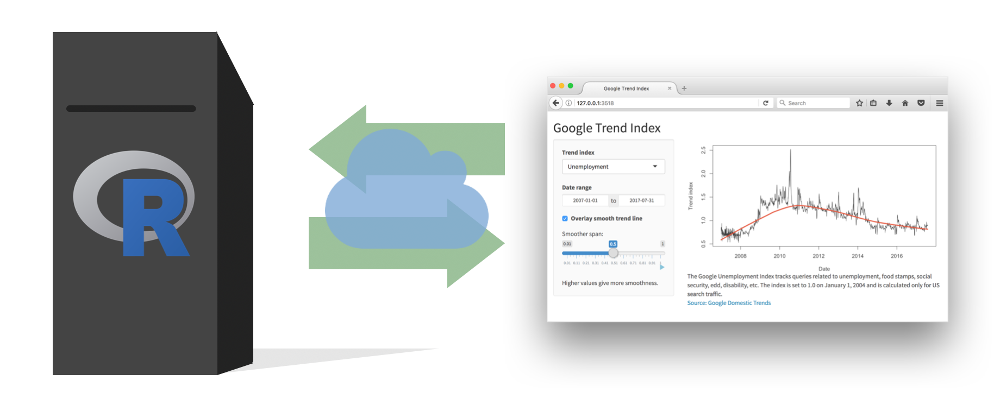
1.13.4
Each app is comprised of two components, a UI and a server.

The UI is ultimately built with HTML, CSS, and JavaScript. However, you as the Shiny developer do not need to know these languages. Shiny lets R users write user interfaces using a simple, familiar-looking API. However there are no limits to customization for advanced users who are familiar with these languages.
The server function contains the instructions to map user inputs to outputs.
I often think of the UI as containing syntax specific to Shiny, and the server as containing R code you might already be familiar with – with some Shiny functions added to achieve reactivity.
1.13.5 Tip: Change display
In this tutorial you will be developing your apps in RStudio Cloud projects, but once you’re done with the tutorial you might consider developing your apps in the RStudio IDE, which has some some handy-dandy functionality for running and viewing your apps.
RStudio will automatically recognize R scripts that contain ui and server components and that end with a call to the shinyApp() function and will make available the Run App button. You can choose to run your app in a new window, or in the viewer pane of your RStudio window.

1.13.6 Tip: Close an app
When you are done with an app, you can terminate the session by clicking the red stop button in your viewer pane.
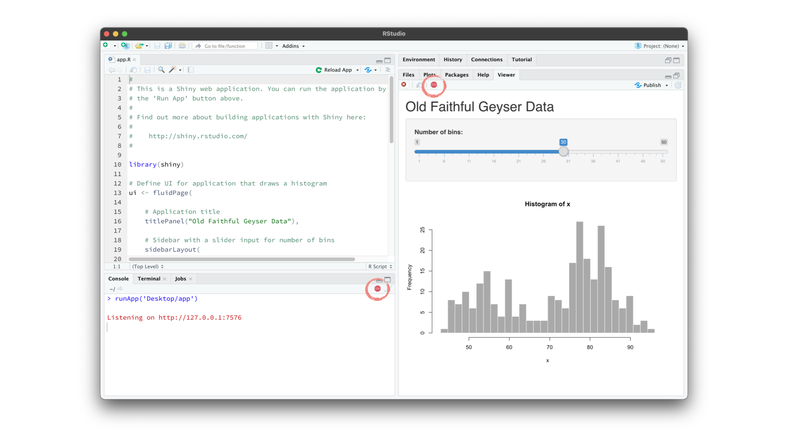
1.13.7
That’s all for this module! In the next module we discuss inputs, outputs, and rendering functions in further detail.